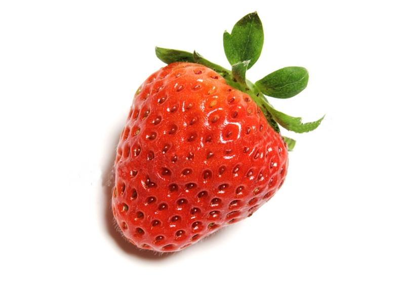
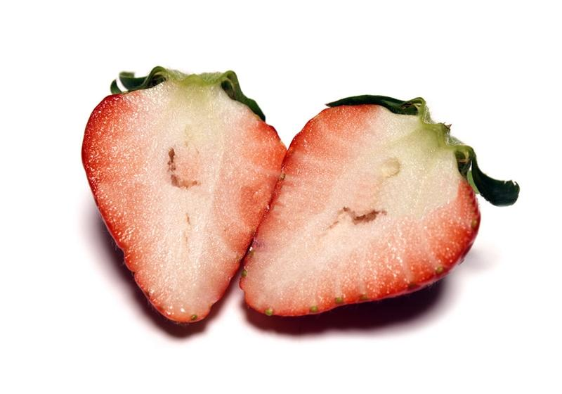

香水草莓
呈圓錐形狀的草莓
長寬比大致相同的圓弧度，果實相較於豐香草莓較小巧。果皮是更有光澤的鮮紅色。果肉呈現由表皮至核心，白色至粉紅色帶有漸層的色澤。較好栽植，不易損傷，但非常怕下雨，雨水豐厚時，就會讓香水草莓的甜度降低。

口感
香水草莓 香水草莓的果色鮮豔，其果形為水滴狀，相較於豐香草莓的口感稍硬。 較為特別之處為，香水草莓在成熟時會散發出一種獨特的香氣，為俗稱中的「越飽滿越甜」的草莓品種。 目前眾多草莓園的大宗品種皆為香水草莓，甜點、蛋糕都使用香水草莓做為材料的比例也最高。
香水草莓甜度甜度，
約為8～10度。

香水草莓種植方式
適合居家栽種的香水草莓，選購時避開捲葉植株，擺放位置忌悶、濕、熱，還要有足夠陽光，要住大盆子，不用天天澆水。 遇到病蟲害若不想噴農藥，專家也有對策，每週挑一天傍晚用無毒資材防治，還可用罩子保護草莓，防病防蟲防鳥！
資料來源: